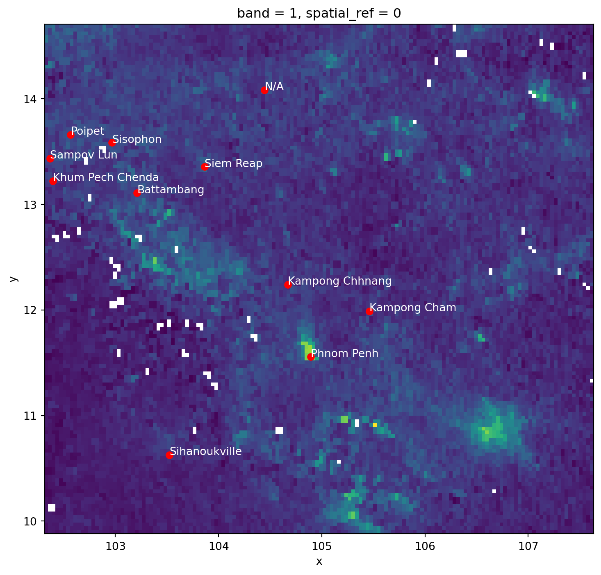
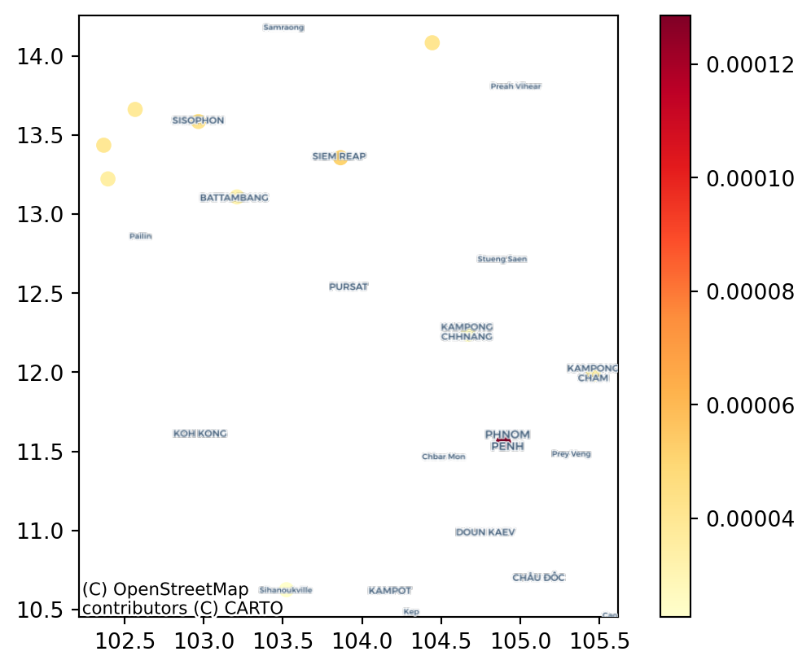
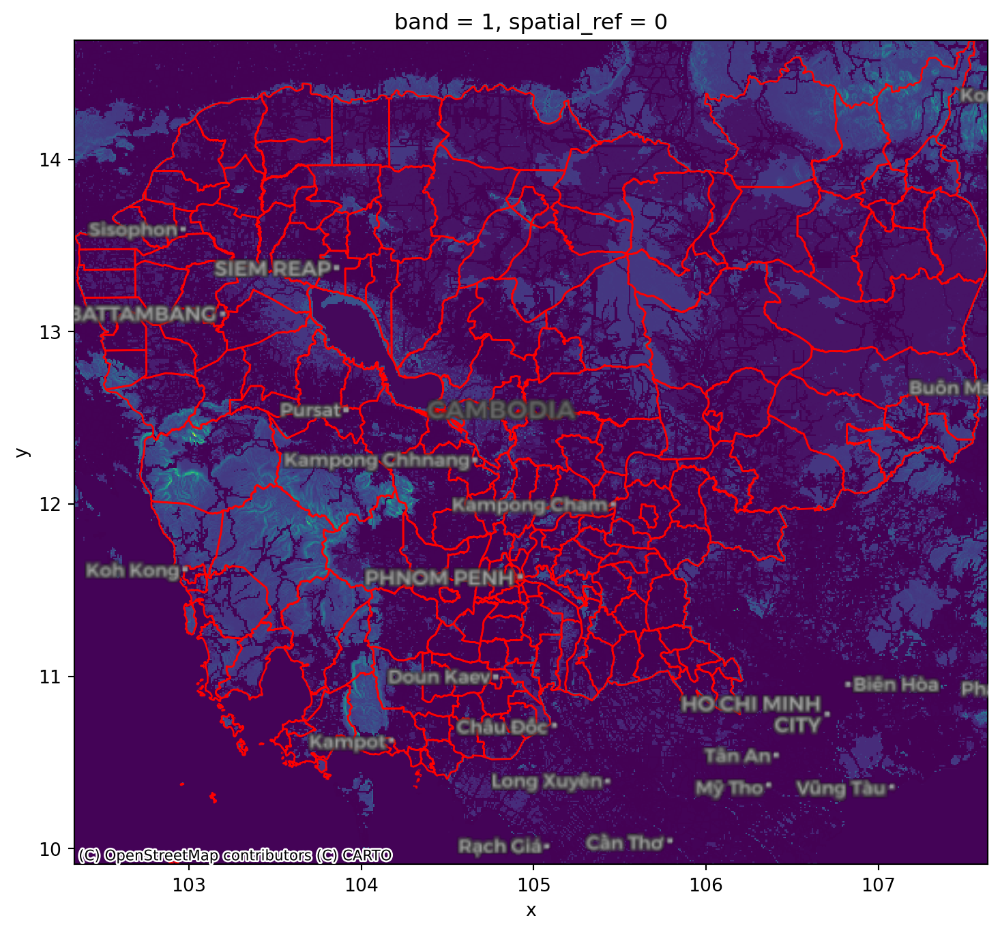
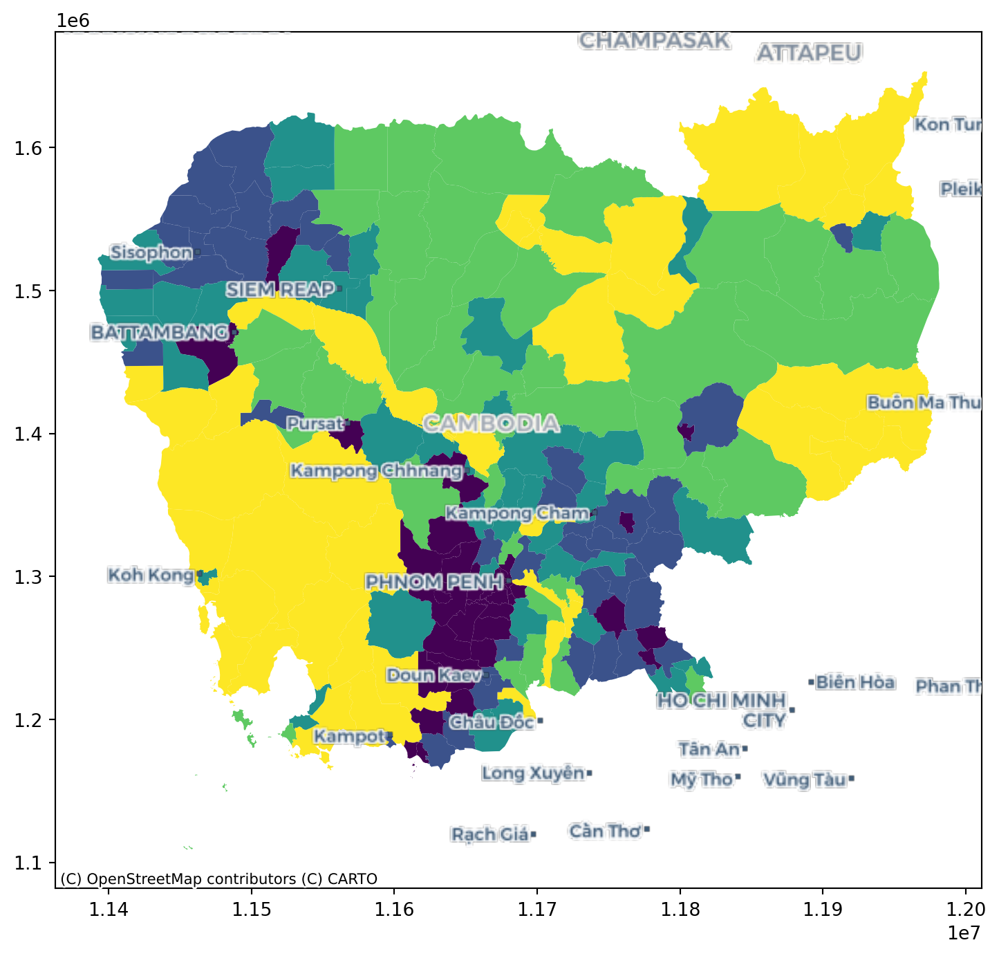
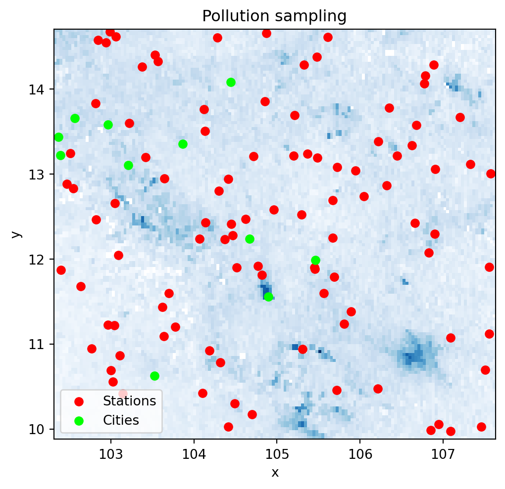
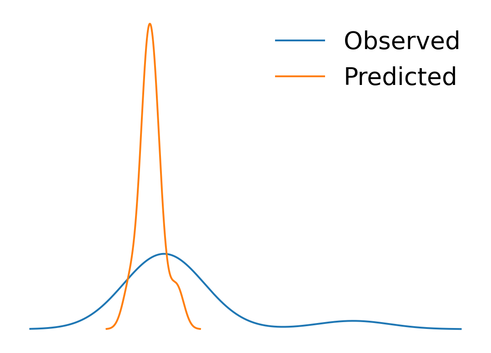
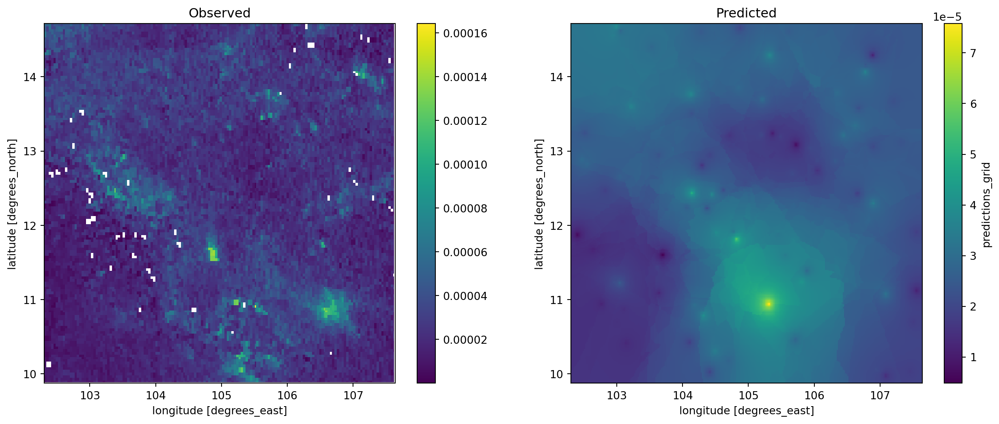
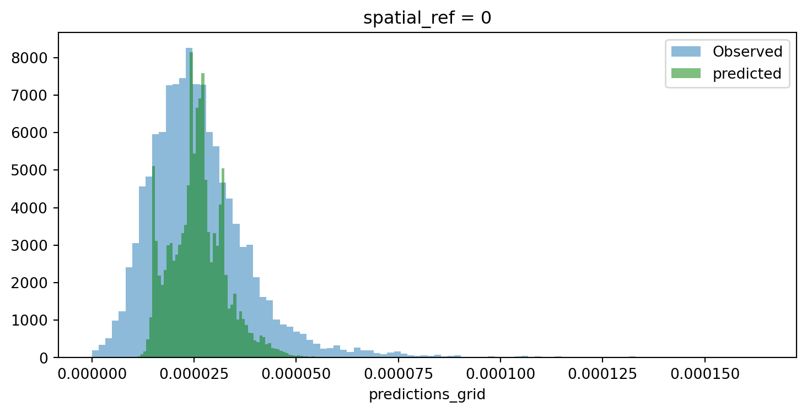
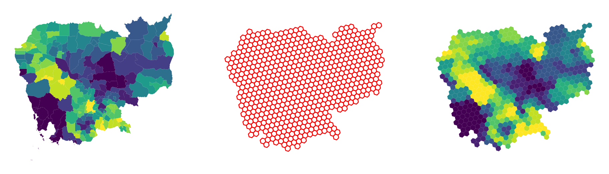

import pandas
import geopandas
import xarray, rioxarray
import contextily
import numpy as np
import matplotlib.pyplot as plt3 Spatial feature engineering (part I)
Feature Engineering is a common term in machine learning that refers to the processes and transformations involved in turning data from the state in which the modeler access them into what is then fed to a model. This can take several forms, from standardisation of the input data, to the derivation of numeric scores that better describe aspects (features) of the data we are using.
Spatial Feature Engineering refers to operations we can use to derive “views” or summaries of our data that we can use in models, using space as the key medium to create them.
There is only one reading to complete for this block: this Chapter of the GDS Book (Rey, Arribas-Bel, and Wolf forthcoming).
3.1 Packages and modules
3.2 Data
If you want to read more about the data sources behind this dataset, head to the Datasets section.
Assuming you have the file locally on the path ../data/:
regions = geopandas.read_file("../data/cambodia_regional.gpkg")
cities = geopandas.read_file("../data/cambodian_cities.geojson")
pollution = rioxarray.open_rasterio(
"../data/cambodia_s5_no2.tif"
).sel(band=1)
friction = rioxarray.open_rasterio(
"../data/cambodia_2020_motorized_friction_surface.tif"
).sel(band=1)Check both geo-tables and the surface are in the same CRS:
(
regions.crs.to_epsg() ==
cities.crs.to_epsg() ==
pollution.rio.crs.to_epsg()
)True3.3 Polygons to points
In which region is a city?
sj = geopandas.sjoin(cities, regions)# City name | Region name
sj[["UC_NM_MN", "adm2_name"]]| UC_NM_MN | adm2_name | |
|---|---|---|
| 0 | Sampov Lun | Sampov Lun |
| 1 | Khum Pech Chenda | Phnum Proek |
| 2 | Poipet | Paoy Paet |
| 3 | Sisophon | Serei Saophoan |
| 4 | Battambang | Battambang |
| 5 | Siem Reap | Siem Reap |
| 6 | Sihanoukville | Preah Sihanouk |
| 7 | N/A | Trapeang Prasat |
| 8 | Kampong Chhnang | Kampong Chhnang |
| 9 | Phnom Penh | Tuol Kouk |
| 10 | Kampong Cham | Kampong Cham |
Note
Challenge: Using the Madrid AirBnb properties and neighbourhoods datasets, can you determine the neighbourhood group of the first ten properties?
3.4 Points to polygons
If we were after the number of cities per region, it is a similar approach, with a (groupby) twist at the end.
- We
set_indexto align both tables - We
assignto create a new column
If you want no missing values, you can fillna(0) since you know missing data are zeros.
regions.set_index(
"adm2_name"
).assign(
city_count=sj.groupby("adm2_name").size()
).info()<class 'geopandas.geodataframe.GeoDataFrame'>
Index: 198 entries, Mongkol Borei to Administrative unit not available
Data columns (total 6 columns):
# Column Non-Null Count Dtype
--- ------ -------------- -----
0 adm2_altnm 122 non-null object
1 motor_mean 198 non-null float64
2 walk_mean 198 non-null float64
3 no2_mean 198 non-null float64
4 geometry 198 non-null geometry
5 city_count 11 non-null float64
dtypes: float64(4), geometry(1), object(1)
memory usage: 18.9+ KB
Note
Challenge: Using the Madrid AirBnb properties, can you compute how many properties each neighbourhood group has?
3.5 Surface to points
Consider attaching to each city in cities the pollution level, as expressed in pollution.
The code for generating the next figure is a bit more advanced as it fiddles with text, but if you want to explore it you can look at the code cell below.
f, ax = plt.subplots(1, figsize=(9, 9))
pollution.where(
pollution>0
).plot(
ax=ax, add_colorbar=False
)
for i, row in cities.iterrows():
plt.text(
row.geometry.x,
row.geometry.y,
row["UC_NM_MN"],
fontdict={"color": "white"},
)
cities.plot(ax=ax, color="r")
plt.show()
from rasterstats import point_query
city_pollution = point_query(
cities,
pollution.values,
affine=pollution.rio.transform(),
nodata=pollution.rio.nodata
)
city_pollution[3.9397064813333136e-05,
3.4949825609644426e-05,
3.825255125820345e-05,
4.103826573585785e-05,
3.067677208474005e-05,
5.108273256655399e-05,
2.2592785882580366e-05,
4.050414400882722e-05,
2.4383652926989897e-05,
0.0001285838935209779,
3.258245740282522e-05]And we can map these on the city locations:
fig, ax = plt.subplots()
cities.assign(
pollution=city_pollution
).plot(
"pollution",
cmap="YlOrRd",
legend=True,
ax=ax
)
contextily.add_basemap(
ax,
crs=cities.crs,
source=contextily.providers.CartoDB.VoyagerOnlyLabels
)
plt.show()
Note
Challenge: Can you calculate the pollution level at the centroid of each Cambodian region in the regional aggregates dataset? how does it compare to their average value?
3.6 Surface to polygons
Instead of transferring to points, we want to aggregate all the information in a surface that falls within a polygon.
For this case, we will use the motorised friction surface. The question we are asking thus is: what is the average degree of friction of each region? Or, in other words: what regions are harder to get through with motorised transport?
fig, ax = plt.subplots(1, figsize=(9, 9))
friction.plot.imshow(
add_colorbar=False, ax=ax
)
regions.plot(
ax=ax, edgecolor="red", facecolor="none"
)
contextily.add_basemap(
ax,
crs=regions.crs,
source=contextily.providers.CartoDB.DarkMatterOnlyLabels,
zoom=7
)
plt.show()
Again, we can rely on rasterstats. The output is returned from zonal_stats as a list of dicts. To make it more manageable, we convert it into a pandas.DataFrame.
from rasterstats import zonal_stats
regional_friction = pandas.DataFrame(
zonal_stats(
regions,
friction.values,
affine=friction.rio.transform(),
nodata=friction.rio.nodata
),
index=regions.index
)
regional_friction.head()| min | max | mean | count | |
|---|---|---|---|---|
| 0 | 0.001200 | 0.037000 | 0.006494 | 979 |
| 1 | 0.001200 | 0.060000 | 0.007094 | 1317 |
| 2 | 0.001200 | 0.024112 | 0.006878 | 324 |
| 3 | 0.001333 | 0.060000 | 0.009543 | 758 |
| 4 | 0.001200 | 0.060132 | 0.008619 | 55 |
This can then also be mapped onto the polygon geography:
fig, ax = plt.subplots(1, figsize=(9, 9))
regions.to_crs(
epsg=3857
).join(
regional_friction
).plot(
"mean", scheme="quantiles", ax=ax
)
contextily.add_basemap(
ax,
source=contextily.providers.CartoDB.VoyagerOnlyLabels,
zoom=7
)
plt.show()
Note
Challenge: Replicate the analysis above to obtain the average friction for each region using the walking surface (cambodia_2020_walking_friction_surface.tif).
3.7 Surface to surface
If we want to align the pollution surface with that of friction, we need to resample them to make them “fit on the same frame”.
pollution.shape(138, 152)friction.shape(574, 636)This involves either moving one surface to the frame of the other one, or both into an entirely new one. For the sake of the illustration, we will do the latter and select a frame that is 300 by 400 pixels. Note this involves stretching (upsampling) pollution, while compressing (downsampling) friction.
# Define dimensions
dimX, dimY = 300, 400
minx, miny, maxx, maxy = pollution.rio.bounds()
# Create XY indices
ys = np.linspace(miny, maxy, dimY)
xs = np.linspace(minx, maxx, dimX)
# Set up placeholder array
canvas = xarray.DataArray(
np.zeros((dimY, dimX)),
coords=[ys, xs],
dims=["y", "x"]
).rio.write_crs(4326) # Add CRScvs_pollution = pollution.rio.reproject_match(canvas)
cvs_friction = friction.rio.reproject_match(canvas)cvs_pollution.shape(400, 300)cvs_pollution.shape == cvs_friction.shapeTrue
Note
Challenge: Trasfer the pollution surface to the frame of friction, and viceversa,
Caution
The following methods involve modelling and are thus more sophisticated. Take these as a conceptual introduction with an empirical illustration, but keep in mind there are extense literatures on each of them and these cover some of the simplest cases.
3.8 Points to points
See this section of the GDS Book (Rey, Arribas-Bel, and Wolf forthcoming) for more details on the technique.
For this exampe, we will assume that, instead of a surface with pollution values, we only have available a sample of points and we would like to obtain estimates for other locations.
For that we will first generate 100 random points within the extent of pollution which we will take as the location of our measurement stations.
The code in this cell contains bits that are a bit more advanced, do not despair if not everything makes sense!
np.random.seed(123456)
bb = pollution.rio.bounds()
station_xs = np.random.uniform(bb[0], bb[2], 100)
station_ys = np.random.uniform(bb[1], bb[3], 100)
stations = geopandas.GeoSeries(
geopandas.points_from_xy(station_xs, station_ys),
crs="EPSG:4326"
)Our station values come from the pollution surface, but we assume we do not have access to the latter, and we would like to obtain estimates for the location of the cities:
fig, ax = plt.subplots(1, figsize=(6, 6))
pollution.where(
pollution>0
).plot(
add_colorbar=False, cmap="Blues", ax=ax
)
stations.plot(ax=ax, color="red", label="Stations")
cities.plot(ax=ax, color="lime", label="Cities")
ax.set_title("Pollution sampling")
plt.legend()
plt.show()
We will need the location and the pollution measurements for every station as separate arrays. Before we do that, since we will be calculating distances, we convert our coordinates to a system expressed in metres.
stations_mt = stations.to_crs(epsg=5726)
station_xys = np.array(
[stations_mt.geometry.x, stations_mt.geometry.y]
).TWe also need to extract the pollution measurements for each station location:
station_measurements = np.array(
point_query(
stations,
pollution.values,
affine=pollution.rio.transform(),
nodata=pollution.rio.nodata
)
)And finally, we will also need the locations of each city expressed in the same coordinate system:
cities_mt = cities.to_crs(epsg=5726)
city_xys = np.array(
[cities_mt.geometry.x, cities_mt.geometry.y]
).TFor this illustration, we will use a \(k\)-nearest neighbors regression that estimates the value for each target point (cities in our case) as the average weighted by distance of its \(k\) nearest neigbours. In this illustration we will use \(k=10\).
Note how sklearn relies only on array data structures, hence why we first had to express all the required information in that format.
from sklearn.neighbors import KNeighborsRegressor
model = KNeighborsRegressor(
n_neighbors=10, weights="distance"
).fit(station_xys, station_measurements)Once we have trained the model, we can use it to obtain predictions for each city location:
predictions = model.predict(city_xys)These can be compared with the originally observed values:
p2p_comparison = pandas.DataFrame(
{
"Observed": city_pollution,
"Predicted": predictions
},
index=cities["UC_NM_MN"]
)fig, ax = plt.subplots(1)
p2p_comparison["Observed"].plot.kde(ax=ax)
p2p_comparison["Predicted"].plot.kde(ax=ax)
ax.set_axis_off()
plt.legend(frameon=False, fontsize=20)
plt.show()
p2p_comparison| Observed | Predicted | |
|---|---|---|
| UC_NM_MN | ||
| Sampov Lun | 0.000039 | 0.000027 |
| Khum Pech Chenda | 0.000035 | 0.000025 |
| Poipet | 0.000038 | 0.000030 |
| Sisophon | 0.000041 | 0.000030 |
| Battambang | 0.000031 | 0.000027 |
| Siem Reap | 0.000051 | 0.000027 |
| Sihanoukville | 0.000023 | 0.000019 |
| N/A | 0.000041 | 0.000028 |
| Kampong Chhnang | 0.000024 | 0.000032 |
| Phnom Penh | 0.000129 | 0.000042 |
| Kampong Cham | 0.000033 | 0.000033 |
Note
Challenge: Replicate the analysis above with \(k=15\) and \(k=5\). Do results change? Why do you think that is?
3.9 Points to surface
Imagine we do not have a surface like pollution but we need it. In this context, if you have measurements from some locations, such as in stations, we can use the approach reviewed above to generate a surface. The trick to do this is to realise that we can generate a uniform grid of target locations that we can then express as a surface.
We will set as our target locations those of the pixels in the target surface we have seen above:
canvas_mt = canvas.rio.reproject(5726)xy_pairs = canvas_mt.to_series().index
xys = np.array(
[
xy_pairs.get_level_values("x"),
xy_pairs.get_level_values("y")
]
).TTo obtain pollution estimates at each location, we can predict with model:
predictions_grid = model.predict(xys)And with these at hand, we can convert them into a surface:
predictions_series = pandas.DataFrame(
{"predictions_grid": predictions_grid}
).join(
pandas.DataFrame(xys, columns=["x", "y"])
).set_index(["y", "x"])
predictions_surface = xarray.DataArray().from_series(
predictions_series["predictions_grid"]
).rio.write_crs(canvas_mt.rio.crs)f, axs = plt.subplots(1, 2, figsize=(16, 6))
cvs_pollution.where(
cvs_pollution>0
).plot(ax=axs[0])
axs[0].set_title("Observed")
predictions_surface.where(
predictions_surface>0
).rio.reproject_match(
cvs_pollution
).plot(ax=axs[1])
axs[1].set_title("Predicted")
plt.show()
f, ax = plt.subplots(1, figsize=(9, 4))
cvs_pollution.where(
cvs_pollution>0
).plot.hist(
bins=100, alpha=0.5, ax=ax, label="Observed"
)
predictions_surface.rio.reproject_match(
cvs_pollution
).plot.hist(
bins=100, alpha=0.5, ax=ax, color="g", label="predicted"
)
plt.legend()
plt.show()
Room for improvement but, remember this was a rough first pass!
Note
Challenge: Train a model with pollution measurements from each city location and generate a surface from it. How does the output compare to the one above? Why do you think that is?
3.10 Polygons to polygons
In this final example, we transfer data from a polygon geography to another polygon geography. Effectively, we re-apportion values from one set of areas to another based on the extent of shared area.
Our illustration will cover how to move pollution estimates from regions into a uniform hexagonal grid we will first create.
import tobler
hex_grid = tobler.util.h3fy(
regions, resolution=5
)Not that pollution is expressed as an intesive (rate) variable. We need to recognise this when specifying the interpolation model:
pollution_hex = tobler.area_weighted.area_interpolate(
regions.assign(geometry=regions.buffer(0)).to_crs(epsg=5726),
hex_grid.to_crs(epsg=5726),
intensive_variables=["no2_mean"]
)And the results look like:
f, axs = plt.subplots(1, 3, figsize=(12, 4))
regions.plot(
"no2_mean", scheme="quantiles", k=12, ax=axs[0]
)
axs[0].set_axis_off()
hex_grid.plot(
facecolor="none", edgecolor="red", ax=axs[1]
)
axs[1].set_axis_off()
pollution_hex.to_crs(epsg=4326).plot(
"no2_mean", scheme="quantiles", k=12, ax=axs[2]
)
axs[2].set_axis_off()
plt.show()
Note
Challenge: Replicate the analytis using resolution = 4. How is the result different? Why?
3.11 Next steps
If you are interested in learning more about spatial feature engineering through map matching, the following pointers might be useful to delve deeper into specific types of “data transfer”:
- The
datashaderlibrary is a great option to transfer geo-tables into surfaces, providing tooling to perform these operations in a highly efficient and performant way. - When aggregating surfaces into geo-tables, the library
rasterstatscontains most if not all of the machinery you will need. - For transfers from polygon to polygon geographies,
tobleris your friend. Its official documentation contains examples for different use cases.
Rey, Sergio J., Daniel Arribas-Bel, and Levi J. Wolf. forthcoming. Geographic Data Science with PySAL and the PyData Stack. CRC press.